항공산업기사 (2012-03-04 기출문제)
1과목: 항공역학
1. 제트류는 일정한 방향과 속도로 부는데, 지구 북반구의 경우 제트류가 발생하는 대기층, 방향, 평균속도로 옳은 것은?
- 성층권, 동에서 서로, 약 37m/s
- 성층권, 서에서 동으로, 약 37m/s
- 대류권, 서에서 동으로, 약 60m/s
- 성층권, 서에서 동으로, 약 60m/s
(정답률: 73%)

2. 그림과 같은 하강하는 항공기의 힘이 성분 (A)에 옳은 것은?
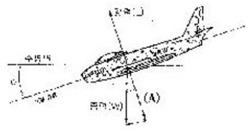
- WsinØ
- WcosØ
- WtanØ
- sin
(정답률: 78%)
3. 비행기의 무게가 5000kgf이고 기관출력이 400HP이다. 프로펠러 효율 0.85로 등속 수평비행을 한다면 이때 비행기의 이용마력은 몇 HP인가?
- 340
- 370
- 415
- 460
(정답률: 66%)
4. 비행기의 속도가 2배가 되면 필요한 조종력은 처음의 얼마가 필요한가?
- 1/2
- 1배
- 2배
- 4배
(정답률: 79%)
5. 고정 날개 항공기의 자전운동(autorotation)과 연관된 특수 비행 성능은?
- 선회 운동
- 스핀(Spin) 운동
- 키돌이(Loop) 운동
- 온 파이런(On pylon) 운동
(정답률: 85%)
6. 항공기의 총 중량 24000kgf의 75%가 주(제동)바퀴에 작용한다면 마찰계수 0.7 일 때 주바퀴의 최소 제동력은 몇kgf 이어야 하는가?
- 5250
- 6300
- 12600
- 25200
(정답률: 86%)
7. 선회 비행시 외측으로 슬립(Slip)하는 가장 큰 이유는?
- 경사각이 작고 구심력이 원심력보다 클 때
- 경사각이 크고 구심력이 원심력보다 작을 때
- 경사각이 크고 원심력이 구심력보다 작을 때
- 경사각이 작고 원심력이 구심력보다 클 때
(정답률: 60%)
8. 프로펠러의 추력에 대한 설명으로 옳은 것은?
- 프로펠러의 추력은 공기밀도에 비례하고 회전면의 넓이에 반비례한다.
- 프로펠러의 추력은 회전면의 넓이에 비례하고 깃의 선속도 제곱에 반비례 한다.
- 프로펠러의 추력은 공기밀도에 반비례하고 회전면의 넓이에 비례한다.
- 프로펠러의 추력은 회전면의 넓이에 비례하고 깃의 선속도 제곱에 비례한다.
(정답률: 69%)
9. 비행기가 1500m 상공에서 양항비 10 인 상태로 활공한다면 최대 수평 활공 거리는 몇 m 인가?
- 1500
- 2000
- 15000
- 20000
(정답률: 95%)
10. 다음 중 비행기의 가로안정성에 가장 적은 영향을 주는 것은?
- 쳐든각
- 동체
- 프로펠러
- 수직꼬리날개
(정답률: 60%)
11. 헬리곱터에서 발생되는 지면효과의 장점이 아닌 것은?
- 양력의 크기가 증가한다.
- 많은 중량을 지탱 할 수 있다.
- 회전 날개깃의 받음각이 증가한다.
- 기체의 흔들림이나 추력 변화가 감소한다.
(정답률: 61%)
12. 날개의 가로세로비가 8, 시의 길이 0.5m 인 직사각형 날개를 장착한 무게 200kgf의 항공기가 해발고도로 등속수평비행하고 있다. 최대양력계수가 1.4 일 때 비행 가능한 최소 속도는 몇 m/s 인가? (단, 밀도는 1.225kg/m 이다.)
- 5.40
- 16.90
- 23.90
- 33.81
(정답률: 41%)
13. 항공기에서 발생하는 항력 중 아음속 비행시 발생하지 않는 것은?
- 유도항력
- 마찰항력
- 형상항력
- 조파항력
(정답률: 84%)
14. 정상수평 비행에서 평형상태의 피칭모멘트계수 CMog의 값은?
- -1
- 0
- 1
- 2
(정답률: 76%)
15. 다음 중 일반적으로 단면 형태가 다른 것은?
- 도움날개
- 방향키
- 피토튜브
- 프로펠러깃
(정답률: 87%)
16. 프로펠러 항공기의 추력과 속도와의 관계로 틀린것은?
- 저속에서 프로펠러 후류의 영향은 없다.
- 비행속도가 감소하면 이용추력은 증가한다.
- 추력이 증가하면 프로펠러 후류 속도가 증가한다.
- 비행속도가 실속속도부근에서는 후류 영향이 최대값이 된다.
(정답률: 65%)
17. 17° 로 상승하는 항공기 날개의 붙임각이 3° 이고 받음각이 3°일 대 항공기의 수평선과 날개의 시위선이 이루는 각도는 몇 도인가?
- 17
- 20
- 23
- 26
(정답률: 75%)
18. 날개의 시위 길이 2m, 대기 속도 300km/h, 공기의 동점성계수가 0.15cm2/s 일때 레이놀즈수는 얼마인가?(오류 신고가 접수된 문제입니다. 반드시 정답과 해설을 확인하시기 바랍니다.)
- 1.1×107
- 1.4×107
- 1.1×106
- 1.4×106
(정답률: 63%)
19. 다음 중 프로펠러의 효율( )을 표현한 식으로 틀린 것은? (단, T:추력, D:지름, V:비행속도 J:진행률, n:회전수, P:동력, CP:동력계수, CT:추력계수이다.)
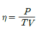
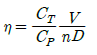
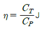
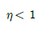
(정답률: 65%)
20. 날개골(Airfoil)의 정의로 옳은 것은?
- 날개의 단면
- 날개가 굽은 정도
- 최대두께를 연결한 선
- 앞전과 뒷전을 연결한 선
(정답률: 89%)
2과목: 항공기관
21. 기관부품에 대한 비파괴 검사 중 강자성체 금속으로만 제작된 부품의 표면결함을 검사 할 수 있는 방법은?
- 형광침투검사
- 방사선 시험
- 자분탐상검사
- 와전류탐상검사
(정답률: 68%)
22. 프로펠러 비행기가 비행 중 기관이 고장 나서 정지시킬 필요가 있을 때, 프로펠러의 깃각을 바꾸어 프로펠러의 회전을 멈추게 하는 조작을 무엇이라 하는가?
- 슬립(Slip)
- 비틀림(Twisting)
- 피칭(Pitching)
- 페더링(Feathering)
(정답률: 87%)
23. 증기폐쇄(Vapor lock)에 대한 설명으로 옳은 것은?
- 기화기에 이상으로 액체연료와 공기가 혼합되지 않는 현상
- 기화기에서 분사된 혼합가스가 거품을 형성하여 실린더의 연료유입을 폐쇄하는 현상
- 혼합가스가 아주 희박해져 실린더로의 연료유입이 폐쇄되는 현상
- 액체연료가 기화기에 이르기 전에 기화되어 기화기에 이르는 통로를 폐쇄하는 현상
(정답률: 69%)
24. 터보제트엔진기관의 추력연료소비율(TSFC)에 대한 설명으로 틀린 것은?
- 추력 비연료소비율이 작을수록 경제성이 좋다.
- 추력 비연료소비율이 작을수록 기관의 효율이 좋다.
- 추력 비연료소비율이 작을수록 기관의 성능이 우수하다.
- 1kgf의 추력을 발생하기 위하여 1초 동안 기관이 소비하는 연료의 체적을 말한다.
(정답률: 82%)
25. 제트기관의 점화장치를 왕복기관에 비하여 고전압, 고에너지 점화장치로 사용하는 주된 이유는?
- 열손실이 크기 때문에
- 사용연료의 휘발성이 낮아서
- 왕복기관에 비하여 부피가 크므로
- 점화기 특성 규격에 맞추어야 하므로
(정답률: 70%)
26. 가스터빈기관의 연료조정장치(FCU)기능이 아닌 것은?
- 연료흐름에 따른 연료필터의 사용여부를 조정한다.
- 출력레버위치에 맞게 대기상태의 변화에 관계없이 자동적으로 연료량을 조절한다.
- 출력레버위치에 해당하는 터빈입구온도를 유지한다.
- 파워레버의 작동이나 위치에 맞게 기관에 공급되는 연료량을 적절히 조절한다.
(정답률: 61%)
27. 제트기관에서 고온고압의 강력한 전기불꽃을 일으키기 위해 저전압을 고전압으로 바꾸어 주는 것은?
- 연료노즐(FuelNozzle)
- 점화플러그(lgnition Plug)
- 점화익사이터(lgnition Exiter)
- 하이텐션 리드 라인(High-Tension Lead line)
(정답률: 72%)
28. 왕복기관으로 흡입되는 공기 중의 습기 또는 수증기가 증가할 경우 발생할 수 있는 현상으로 옳은 것은?
- 체제효과가 증가하여 출력이 증가한다.
- 일정한 RPM과 다기관 압력 하에서는 기관출력이 감소한다.
- 고출력에서 연료요구량이 감소하여 이상 연소현상이 감소된다.
- 자동 연료조저장치를 사용하지 않는 기관에서는 혼합기가 희박해진다.
(정답률: 58%)
29. 항공기 기관의 오일필터가 막혔다면 어떤 현상이 발생하는가?
- 기관 윤활계통의 윤활 결핍현상이 온다.
- 높은 오일압력 때문에 필터가 파손되다.
- 오일이 바이패스 밸브(bypass valve)를 통하여 흐른다.
- 높은 오일압력으로 체크밸브(check valve)가 작동하여 오일이 되돌아온다.
(정답률: 88%)
30. 왕복기관을 실린더 배열에 따라 분류할 때 대향형기관을 나타낸 것은?
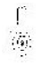
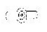
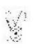
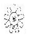
(정답률: 85%)
31. 가스터빈기관의 용량형 점화장치에서(lgniter)가 장착되지 않은 상태로 작동할 때, 열이 축적되는 것을 방지 하는 것은?
- 블리드 저항(Bleed resister)
- 저장 축전기(Stroage capacitor)
- 더블러 축전기(Doubler capacitor)
- 고압 변압기(High tension transformer)
(정답률: 67%)
32. 저출력 소형 항공기 왕복긴관의 크랭크축에 일반적으로 사용되는 베어링은?
- 볼(Bell)베어링
- 롤러(Roller)베어링
- 평형(Plate)베어링
- 니들(Needle)베어링
(정답률: 59%)
33. 항공기 왕복기관의 배기계통의 목적 및 용도로 틀린 것은?
- 압을 높이지 않고 가스를 배출한다.
- 연소가스내의 유행성분 밀도를 높인다.
- 기내 난방이나 수퍼차저의 구동 등에 사용된다.
- 기화기 결빙이 우려 될 경우 흡기의 예열에 사용된다.
(정답률: 63%)
34. 정적비열 0.2kcal/kg ㆍ k인 이상기체 5kg이 일정압력 하에서 50kcal의 열을 받아 온도가 0℃에서 20℃까지 증가하였다. 이 때 외부에 한 일은 몇 kcal인가?
- 4
- 20
- 30
- 70
(정답률: 52%)
35. 왕복기관의 마그네토 캠축과 기관크랭크축의 회전속도비를 옳게 나타낸 식은?
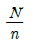
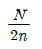
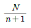
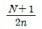
(정답률: 73%)
36. 고도가 높아지면서 나타나는 기관의 변화가 아닌것은?
- 기관 출력의 감소
- 기압 감소로 오일소모 증가
- 점화계통에서 전류가 새어나감(Leak out)
- 기압 감소로 연료비등점이 낮아져 증기폐색발생
(정답률: 56%)
37. 엔탈피(Enthalpy)의 차원과 같은 것은?
- 에너지
- 동력
- 운동량
- 엔트로피
(정답률: 76%)
38. 다음 중 일반적으로 프로펠러 방빙계통에서 사용되는 것은?
- 에틸알콜
- 변성(denatured)알콜
- 이소프로필(isopropyl)알콜
- 에틸렌글리콜(ethylee glycol)
(정답률: 66%)
39. 가스터빈기관의 고온부 구성품에 수리해야 할 부분을 표시할 때 사용하지 않아야 하는 것은?
- Chalk
- Layout Dye
- Felt-up Applicator
- Lead Pencil
(정답률: 74%)
40. 가스터빈기관 내부에서 가스의 속도가 가장 빠른 곳은?
- 연소실
- 터빈 노즐
- 압축기 부분
- 터빈 로터
(정답률: 72%)
3과목: 항공기체
41. 강관의 용접작업시 조인트 부위를 보강하는 방법이 아닌 것은?
- 평 가세트(Falt gassets)
- 스카프 패치(Scarf patch)
- 손가락 판(Finger strapes)
- 삽입 가세트(Insert gassets)
(정답률: 77%)
42. 리브너트(Rivnut)사용에 대한 설명으로 옳은 것은?
- 금속면에 우포를 씌울 때 사용한다.
- 두꺼운 날개 표피에 리브를 붙일 때 사용 한다.
- 기관 마운트와 같은 중량물을 구조물에 부착할 때 사용한다.
- 한쪽면 에서만 작업이 가능한 제빙장치 등을 설치 할 때 사용한다.
(정답률: 76%)
43. 비행기의 표피판에 두께 4mm, 전단흐름 3000kgf/cm 일 때 전단 응력은 약 몇 kgf/mm2 인가?
- 7.5
- 75
- 750
- 7500
(정답률: 46%)
44. 동체구조형식에서 세미모노코크구조에 대한 설명으로 옳은 것은?
- 가장 넓은 동체 내부 공간을 확보할 수 있으며 세로대 및 세로지, 대각선 부재를 이용한 구조이다.
- 하중의 대부분을 표피가 담당하며, 내부에 보강재가 없이 금속의 껍질로 구성된 구조이다.
- 골격과 외피가 하중을 담당하는 구조로서 외피는주로 전단응력을 담당하고 골격은 인장, 압축, 굽힘 등 모든 하중을 담당하는 구조이다.
- 구조부재로 삼각형을 이루는 기체의 뼈대가 하중을 담당하고 표피는 항공역학적인 요구를 만족하는 기하학적 형태만을 유지하는 구조이다.
(정답률: 79%)
45. 다음 중 착륙거리를 단축시키는데 사용하는 보조조종면은?
- 스테빌레이터(Stabilator)
- 브레이크 브리딩(Brake Bleeding)
- 그라운드 스포일러(Ground Spoiler)
- 플라이트 스포일러(Flight Spoiler)
(정답률: 88%)
46. 그림과 같은 T자형 구조재에서 도심(G)을 지나는 X-X축에 대한 단면 2차 모멘트의 값은 약 몇 cm4인가?
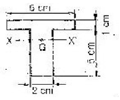
- 27.5
- 55.1
- 220.4
- 110.2
(정답률: 52%)
47. 부품번호가 “NAS 654 V 10 D"인 볼트에 너트를 고정시키는데 필요한 것은?
- 코터핀
- 스크류
- 락크 와셔
- 특수 와셔
(정답률: 68%)
48. 스크류의 부품번호가 AN 501 C-416-7 이라면 재질은?
- 탄소강
- 황동
- 내식강
- 특수 와셔
(정답률: 63%)
49. 비행기의 기체축과 운동 및 조종면이 옳게 연결된 것은?
- 가로축-빗놀이운동(Yawing)-승강키(Elevator)
- 수직축-선회운동(Spinning)-스포일러(Spoiler)
- 대칭축-키놀이운동(Pitching)-방향키(Rudder)
- 세로축-옆놀이운동(Rolling)-도움날개(Aileron)
(정답률: 88%)
50. 항공기의 리깅 체크(rigging Check)시 일반적으로 구조적 일치 상태 점검에 포함되지 않는 것은?
- 날개 상반각
- 수직안정판 상반각
- 날개 취부각
- 수평안정판 상반각
(정답률: 70%)
51. 직경 3/32″ 이하의 가요성케이블(Flexible cable)에 사용되고, 고열 부분에서는 사용이 제한되는 케이블작업은?
- Swaging
- Nicopress
- Five-Tuck Woven Splice
- Wrap-solder cable splice
(정답률: 67%)
52. 열처리 강화형 알루미늄 합금을 500℃ 전후의 온도로 가열한 후 물에 담금질을 하면 합금성분이 기본적으로 녹아 들어가 유연한 상태가 얻어지는데, 이런 열처리를 무엇이라 하는가?
- 풀림(Annealing)
- 뜨임(Tempening)
- 알로다이징(Alodizing)
- 용체화처리(Solution heat treatment)
(정답률: 62%)
53. 항공기 기체구조 중 트러스형식에 대한 설명으로 옳은 것은?
- 항공기의 전체적인 구조형식은 아니며 날개 또는 꼬리 날개와 같은 구조부분에만 사용하는 구조형식이다.
- 금속판 외피에 굽힘을 받게 하여 굽힘 전단응력에 대한 강도를 갖도록 하는 구조방식으로 무게에 비해 강도가 큰 장점이 있어 현재 금속 항공기에서 많이 사용하고 있다.
- 주 구조가 피로로 인하여 파괴되거나 혹은 그 일부분이 파괴되더라도 나머지 구조가 하중을 지지할 수있게 하여 파괴 또는 과도한 구조 변형을 방지하는 구조형식이다.
- 강관 등으로 트러스를 구성하고 여기에 천외피 또는 얇은 금속판의 외피를 씌운 형식으로 소형 및 경비행기에 많이 사용된다.
(정답률: 84%)
54. 다음과 같은 항공기 트러스 구조에서 부재 BD의 내력은 몇 kN 인가? (문제 복원 오류로 그림 내용이 정확하지 않습니다. 정확한 그림 내용을 아시는 분께서는 오류신고 또는 게시판에 작성 부탁드립니다.)
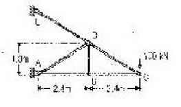
- 0
- 100
- 150
- 200
(정답률: 68%)
55. 다음 중 부식의 종류에 해당되지 않는 것은?
- 응력 부식
- 표면 부식
- 입자간 부식
- 자장 부식
(정답률: 86%)
56. 부품 번호가 AN 470 AD 3-5 인 리벳에서 AD는 무엇을 나타내는가?
- 리벳의 직경이 3/16″ 이다.
- 리벳의 길이는 머리를 제외한 길이이다.
- 리벳의 머리 모양이 유니버셜 머리이다.
- 리벳의 재질이 알루미늄 합금인 2117이다.
(정답률: 80%)
57. 항공기 판재의 직선 굽힘 가공 시 고려해야 할 요소가 아닌 것은?
- 세트백
- 굽힘 여유
- 최소 굽힘 반지름
- 진폭 여유
(정답률: 82%)
58. 일반적인 금속의 응력-변형률 곡선에서 위치별 내용이 옳게 짝지어진 것은?
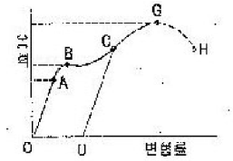
- G : 항복점
- OA : 비례탄성범위
- B : 인장강도
- OD : 순간 변형률
(정답률: 69%)
59. 실속속도가 80km/h 인 비행기가 150km/h 로 비행 중 급히 조종간을 당겼을 때 비행기에 걸리는 하중배수는 약 얼마인가?
- 0.75
- 1.50
- 2.25
- 3.52
(정답률: 47%)
60. 그림과 같이 기준선으로부터 2.5m 떨어진 앞바퀴에 5000kg 의 반력이 작용하고, 앞바퀴에서 10m 떨어진 양쪽 뒷바퀴 각각에 10000kg 의 반력이 작용할 때, 이 항공기의 무게중심은 기준선으로부터 몇 m 떨어진곳에 위치하겠는가?
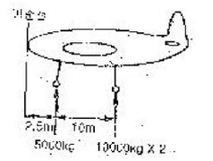
- 10.0
- 10.5
- 11.0
- 11.5
(정답률: 76%)
4과목: 항공장비
61. 병렬회로에 대한 설명으로 틀린 것은?
- 전체 저항은 가장 작은 1개의 저항값보다 작다.
- 전체의 전류는 각 회로로 흐르는 전류의 합과 같다.
- 1개의 저항을 제거하면 전체의 저항 값은 증가한다.
- 병렬로 접속되어 있는 저항 중에서 1개의 저항을 제거하면 남아 있는 저항에 전압강하는 증가한다.
(정답률: 58%)
62. 다음 중 작동유의 압력에너지를 기계적인 힘으로 변환시켜 직선운동을 시키는 것은?
- 작동실린더(Actuationg Cylinder)
- 마스터 실린더(Master Cylinder)
- 유압 펌프(Hydraulic Pump)
- 축압기(Accumulator)
(정답률: 63%)
63. 인공위성을 이용하여 통신, 항법, 감시 및 항공관제를 통합 관리하는 항공운항지원 시스템의 명칭은?
- 위성 항법 시스템
- 항공 운항 시스템
- 위성 통합 시스템
- 항공 관리 시스템
(정답률: 77%)
64. TCAS와 ACAS 의 공통점으로 옳은 것은?
- 항공 관제 시스템이다.
- 항공기 호출 시스템이다.
- 항공기 충돌 방지 시스템이다.
- 기상상태를 알려주는 시스템이다.
(정답률: 75%)
65. 자이로 로터축(Rotor shaft)의 편위(Drift) 원인으로 옳은 것은?
- 각도 정보를 감지하기 위한 싱크로에 의한 전자적 결합
- 균형 잡힌 짐발의 중량
- 균형 잡힌 짐발 베어링
- 지구의 이동과 공전
(정답률: 59%)
66. 공압계통에서 릴리프 밸브(Relief Valve)의 압력조정은 일반적으로 무엇으로 하는가?
- 심(Shim)
- 스크류(Screw)
- 증류(Gravity)
- 드라이브 핀(Drive Pin)
(정답률: 76%)
67. 자이로 스코프(Gyroscope)의 섭동성에 대한 설명으로 옳은 것은?
- 극 지역에서 자이로가 극 방향으로 기우는 현상
- 외력이 가해지지 않는 한 일정 방향을 유지하려는 경향
- 피치 축에서의 자세 변화가 롤(roll) 및 요(yaw)축을 변화 시키는 현상
- 외력이 가해질 때 가해진 힘 방향에서 로터 회전방향으로 90도 회전한 점에 힘이 작용하여 로터가 기울어지는 현상
(정답률: 75%)
68. 다음 중 항공기에 갖추어야할 비상 장비가 아닌 것은?
- 손도끼
- 휴대용버너
- 메가폰
- 구급의료용품
(정답률: 87%)
69. 다음 중 HF 주파수대를 반사시키는 대기의 전리층은?
- D층
- E층
- F층
- G층
(정답률: 60%)
70. 400Hz 의 교류를 사용하는 항공기에서 8000rpm으로 구동되는 교류발전기는 몇 극이어야 하는가?
- 2극
- 4극
- 6극
- 8극
(정답률: 66%)
71. 비행 자세 지시계(ADI)에 대한 설명으로 틀린 것은?
- 현재의 항공기 비행자세를 지시해 준다.
- 미리 설정된 모드로 비행하기 위한 명령장치(FD)의 일부이다.
- 희망하는 코스로 조작하여 항공기의 위치를 수정한다.
- INS에서 받은 자방위 및 VOR/ILS 수신 장치에서 받은 비행 코스와의 관계를 그림으로 표시한다.
(정답률: 59%)
72. 비행상태에 따른 객실고도에 대한 설명으로 틀린 것은?
- 착륙시 지상고도와 일치시킨다.
- 상승시 객실고도는 일정비율로 증가시킨다.
- 하강시 객실고도는 일정비율로 감소시킨다.
- 순항시 객실고도는 항공기의 고도와 일치시킨다.
(정답률: 80%)
73. 항공기에서 화재경고에 대한 설명으로 틀린 것은?
- 탐지장치는 온도, 복사열, 연기, 일산화탄소 등을 이용한다.
- 화재 탐지기로부터의 신호는 음향 경고, 적색 등을 이용하여 표시한다.
- 화재탐지기의 고장을 예방하기 위하여 조종실에서 기능 실험을 할 수 있도록 한다.
- 동력 장치에는 화재 발생시 동력 장치와 기체와의 공급 관계를 차단하는 연소가열기를 설치한다.
(정답률: 59%)
74. 항공계기에서 일반적인 사용 범위부터 초과금지 사이의 경계 범위를 의미하는 것은?
- 적색 방사선
- 황색 호선
- 녹색 호선
- 백색 호선
(정답률: 66%)
75. 그림과 같은 교류회로에서 임피던스는 몇 Ω 인가?
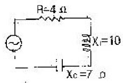
- 5
- 7
- 10
- 17
(정답률: 59%)
76. 자이로를 이용하는 계기 중 자이로의 각속도 성분만을 검출, 측정하여 사용하는 계기는?
- 수평의
- 선회계
- 정침의
- 자이로 컴파스
(정답률: 63%)
77. 납산축전지(Lead acid battery)에 사용되는 전해액의 비중은 온도에 따라 변화하여 비중계를 사용시 온도를 고려해야 하지만 일정한 온도 범위에서는 비중의 변화가 적기 때문에 고려하지 않아도 되는데 이러한 온도범위는?
- 0 ~ 30°F
- 30 ~ 60°F
- 70 ~ 90°F
- 100 ~ 130°F
(정답률: 60%)
78. 직류 전동기는 그 종류에 따라 부하에 대한 특성이 다른데, 정격이상의 부하에서 토크가 크게 발생하여 왕복기관의 시동기에 가장 적합한 것은?
- 분권형
- 복권형
- 직권형
- 유도형
(정답률: 79%)
79. 항공기의 안테나(Antenna)의 방빙 시스템에 대한 설명으로 옳은 것은?
- 모든 무선안테나는 기능 유지를 위해 방빙시스템을 갖추어야 한다.
- 안테나의 방빙 시스템은 얼음의 박리에 의한 기관이나 기체의 손상을 방지하기 위해 필요하다.
- 레이돔(Radome)은 레이더 및 안테나가 장착된 곳으로 방빙 시스템이 반드시 설치된다.
- 안테나의 방빙 시스템은 구조상 기능 유지를 위해 Fin Type의 안테나에만 요구되어진다.
(정답률: 61%)
80. 다음 중 무선원조 항법장치가 아닌 것은?
- Inertial navigation system
- Automatic direction system
- Air traffic control system
- Distance measuring equipment system
(정답률: 59%)